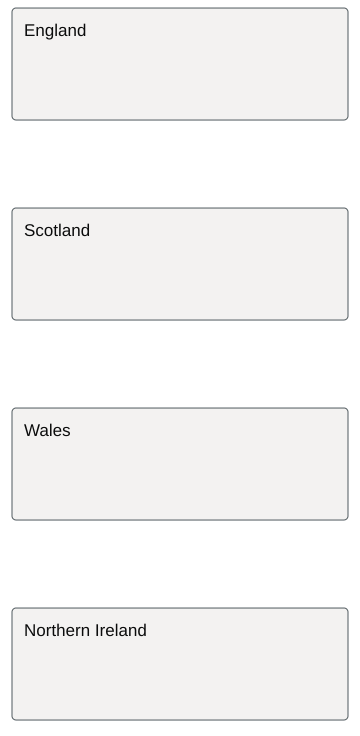

Check country coverage, vintage and cartographic limits
Retained metadata extension. Its graph is supplied as RDF or geospatial metadata; Markdown-core conformance is not asserted.
Question
Which UK countries can this pack compare, which boundary vintage and source conditions apply, and can it establish district-level or precise coastline conclusions?
Answer from the retained evidence
The four records cover England, Scotland, Wales and Northern Ireland. The manifest identifies December 2025 country boundaries, with separate overview and detail representations retrieved on 18 November 2026. Crown Dependencies and Overseas Territories are excluded. The source attribution and licence are retained. Cartographic generalisation and Mean High Water clipping limit coastline interpretation; country records do not provide district-level evidence.
Open England, compare the other country records, then inspect the two representation entries and their source hashes. Keep the source attribution, vintage and coverage exclusions with any exported answer.
Complete retained graph
4 records; 0 directed assertions.

Every arrow is a retained assertion. The complete records and assertions are in the evidence file.
- Inspect England in Reader
- Inspect Scotland in Reader
- Inspect Wales in Reader
- Inspect Northern Ireland in Reader
Limits of this answer
- The graph contains no asserted relationships between the four country records.
- Crown Dependencies and Overseas Territories are outside the declared coverage.
- Small islands are subject to scale generalisation; use source geometry for analysis.
- The pack does not establish local district boundaries or current operational suitability.
Inspect or use the evidence
Complete worked-question evidence · Context for an AI client · Replay the record journeys · Authored question
- data/datasets-0.json —
3522a1e6f6616248c5cf263f40d23b761a8206b55c01c4936ceace715f0af39c - data/detail.geojson —
6abbb12e45882cdec023f9f660bcab26c93927d99d63f1c1dbeb5148c83e6c02 - data/manifest.json —
99992ab66aec5ac88082add42718876022a0b33a706d01e8e08e7ae22261f8e6 - data/overview.geojson —
e98e691b3d719b479b3f45853e7b1069d0c2a7a60866020adfd837918c0249e3 - manifest.json —
561c0ff3f8fa90097036178f456a5076ff033215ee564225b5ed377eef0b564d - okf-explorer.json —
bf15eb3c6b8bce4453ea1cb520ccabcc822210f4255d70ebeb8a569310f59931 - receipt.json —
da6a7f0fc6d79585c3276ca216d0be12ab0812ac9a87db08d7de93c449095100